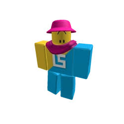

Хто створив DOORS
Розробник гри: Lightning_Splash (команда LSPLASH).
Путівник для виживання
46 істот у 8 розділах. Що ти чуєш, що бачиш і що робити, щоб дійти до кінця.
Розробник гри: Lightning_Splash (команда LSPLASH).

Тут з’являється більшість монстрів. Більшість із них є й у Шахтах.
Ознака: З’являється, якщо надто довго сидіти в шафі чи під ліжком.
Дія: Вийди зі сховку, щойно побачиш його попередження (якщо поруч немає Rush). Не сиди в шафі без потреби.
Ознака: Рідкісний переляк, коли відкриваєш двері.
Дія: Шкоди не завдає. Просто не лякайся.
Ознака: Чорна порожнеча, з’являється, коли відходиш від команди.
Дія: У мультиплеєрі тримайся групи. Шкоди не завдає, лише телепортує до інших гравців.
Ознака: Блимає світло, лунає гучний шепіт.
Дія: Сховайся в шафі або під ліжком і почекай.
Ознака: Те саме, що Rush, але гучніше.
Дія: Сидь у сховку: він може пролетіти кілька разів поспіль.
Ознака: На стінах з’являються очі, починається гонитва.
Дія: Біжи вперед без зупинок, обходь чорні руки. Сховатися не вийде.
Ознака: Бібліотека. Він сліпий, але чує кроки.
Дія: Присядь (Ctrl або C) і йди тихо. Не біжи.
Ознака: Темна кімната, тихе «псс».
Дія: Швидко повернись до нього обличчям.
Ознака: Синє світло і напис «Turn around».
Дія: Розвернись і біжи назад, поки він не зникне.
Ознака: Кімната з фіолетовими очима.
Дія: Не дивись на нього: тримай погляд убік або вниз.
Ознака: Випадковий переляк із шафи.
Дія: Шкоди не завдає. Просто не лякайся.
Ознака: Павук у шухляді.
Дія: Не відкривай шухляди без потреби.
Ознака: Багато дверей, частина з хибними номерами.
Дія: Перевір номер і обери справжні двері.
Ознака: З’являється, коли довго стоїш в одній кімнаті.
Дія: Не затримуйся. Відкрий наступні двері, і він зникне.
Ознака: Пастка на підлозі (двір, оранжерея).
Дія: Дивись під ноги й перестрибни її.
Нові монстри Шахт. Монстри з Готелю тут теж трапляються.
Ознака: Сидить на стелі.
Дія: Не стій під ним.
Ознака: Зграя кажанів. Їх приваблює світло.
Дія: Вимкни ліхтарик і відійди. Не наступай на яйця.
Ознака: Величезний монстр, ганяється за тобою.
Дія: Ховайся у вузьких проходах, куди він не пролазить.
Головне тут таймер: збирай важелі.
Ознака: Велика фігура, дивитися на неї небезпечно.
Дія: Дивись трохи вниз, щоб не бачити його повністю.
Ознака: Швидкий монстр, як Ambush.
Дія: Ховайся так само, як від Ambush.
Ознака: Приходить, коли закінчується таймер.
Дія: Швидко бери важелі: вони додають час.
Офісний поверх із чергами, коробками й натовпами.
Ознака: Іде за тобою й повторює твої рухи. Екран трясеться.
Як викликати: У ванній дивись у дзеркало, поки воно не трісне.
Дія: Шкоди не завдає. З ним можна «торгуватися» (досягнення Smashing Deal). Хрест проти нього дає Annihilation.
Ознака: Натовп офісних фігур біжить до наступних дверей.
Дія: Не стій на їхньому шляху: зайди в шафу або притулись до бічної стіни.
Ознака: Швидкий монстр, схожий на Rush, відкриває двері.
Дія: Зійди з головного шляху: в іншу кімнату чи шафу.
Ознака: Черга і номерок на касі.
Дія: Стеж за номером і вчасно віддай квиток. Якщо гониться, сховайся в шафі.
Ознака: Плаче чорна постать у темній кімнаті.
Дія: Не дивись на неї: опусти погляд і відверни камеру.
Ознака: Обличчя зі статикою на екрані (новий A-90).
Дія: Прибери руки від керування й не рухайся. Інакше він вимагатиме золото.
Ознака: Бос Архівів: гониться кімнатами.
Дія: Збирай коробки з номерами, що збігаються з дверима. Уникай Slackers.
Секретний підйом сходами. Слухай звуки.
Ознака: Блимає біле око в темряві, шурхіт позаду.
Дія: Подивись на нього, щоб він відступив, але не довго. Якщо з’явилась рука зліва, розвернись.
Ознака: Кульки з очима викочуються з контейнерів.
Дія: Не відкривай усе підряд. Відійди від них: це найлегший монстр.
Ознака: Чути статику, поряд телевізор.
Дія: Обходь телевізор, якщо є шлях, і не підходь на звук.
Сад, ліс і лабіринт із живоплоту.
Ознака: Дружній NPC у лабіринті Надвір’я.
Дія: Поговори з ним: він дає Lotus за 8 лепестків його, який може воскресити тебе.
Ознака: Маленькі ворони, що злітають, коли підходиш.
Дія: Не небезпечні. Їхній переполох може попередити про інших монстрів.
Ознака: На деревах з’являються очі, потім гонитва.
Дія: Біжи вперед, обирай правильні двері й оминай пастки Snare.
Ознака: Монстр з лампою замість голови, лабіринт.
Дія: Коли лампа світиться, стій і не рухайся. Тримайся подалі від ліхтарів.
Ознака: Садівник виходить із сараю.
Дія: Не стій довго на траві й не дивись на нього.
Ознака: Ямки в землі з листям.
Дія: Дивись під ноги й обходь такі місця.
Ознака: Статуї, що вдають обеліски.
Дія: Не повертайся до них спиною надовго: стеж за ними.
Світла й особливі істоти: більшість із них допомагає гравцю.
Ознака: Біле світло-помічник. З’являється в темних кімнатах через кілька хвилин.
Дія: Йди за ним: воно підсвічує важливі предмети й потрібні двері, допомагає в гонитві.
Ознака: Жовте світло-помічник. Його повідомлення пояснюють, що саме тебе вбило.
Дія: Прочитай підказку й врахуй її в наступному забігу.
Ознака: З’являється, якщо відстаєш від команди або наступна кімната не завантажилась.
Дія: Нічого не роби: він телепортує тебе вперед.
Ознака: Червоноокий Архітектор. Його можна побачити в анімації із Seek.
Модифікатори: Дає модифікатори (за даними гравців, у джерелах не підтверджено).
Дія: Це лор, а не звичайний монстр у забігу. За лором він ворожий до гравця. Деталі перевір у DOORS Wiki.
Збійні версії Rush, Ambush і Screech. З’являються після взаємодії з Glitch Fragment. Armageddon і Cataclysm проносяться кімнатами й після перемоги можуть дати бафф.
Ознака: Рідкісний фіолетовий куб у Готелі чи Шахтах.
Дія: Не чіпай, якщо не готовий до бою: з нього з’являється один зі «збійних» монстрів.
Ознака: Пролітає кімнатами, як Rush, і не лише раз. У вікі має назву RNIUSHCg==.
Дія: Сховайся в шафі й дочекайся, поки він пролетить.
Нагорода: Після перемоги дає 1 з 4 випадкових баффів (за даними гравців, у джерелах не підтверджено).
Ознака: Так само проноситься кімнатами, схожий на Ambush. У вікі: AR0xMBUSH.
Дія: Ховайся, як від звичайного Ambush, і не виходь одразу.
Нагорода: Після перемоги дає 1 з 4 випадкових баффів (за даними гравців, у джерелах не підтверджено).
Ознака: Збійна версія Screech.
Дія: Одразу подивись на нього, як на звичайного Screech.